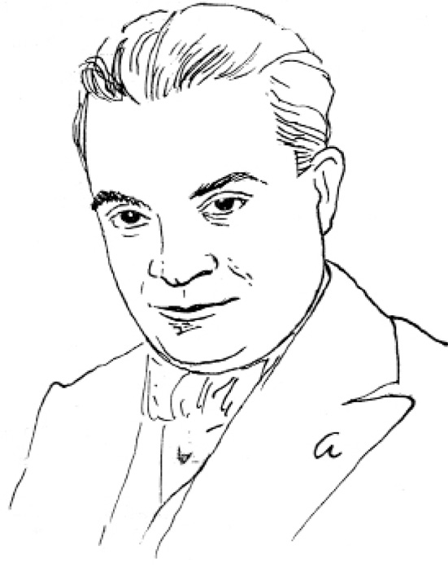
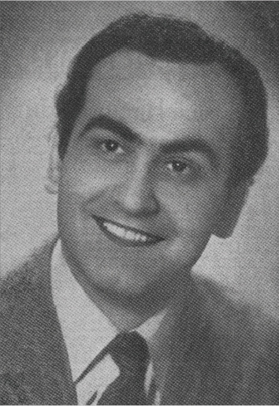

NURULLAH ATAÇ, DİPLOMASIZ
DÜŞÜNÜR OLARAK ÜN YAPMIŞTI
Nurullah Ataç (1898-1957)
Çizgi Zahir Güvemli
Çağımız Türk şiirini, hikâyesini, tiyatrosunu yapanların ya karşısında, ya yanındaydı. Bu tür sanat eleştirmenlerinin en önde’lerinden, belki de en büyüğüydü. Şu anda bu satırları yazarken tüm şair dostlarım, oyuncular, karşıtları, sevenleri, dizi dizi karşımda.
Örneğin, onun 1937’de bile Simavna Kadısı Oğlu Şeyh Bedreddin Destanı [1936] için, bugün dünyanın en büyük şairlerinden biri olan Nâzım Hikmet için yazdığı şu sözleri ele alalım: “Konuştuğu gibi, konusuna, fikirlerine de hâkim. Sözlerinin gayet açık olması bence bundan geliyor. Şüphesiz ki bu şairde bir musiki gücü var, koşuklarını birer senfoni haline getirmek istiyor ve buna çoğunlukla ulaşıyor; fakat kulak gibi gözü de işliyor, anlatmak istediği şeyi görüyor ve gördüğü için de anlatabiliyor. Destanı okurken bir ses duymakla kalmıyoruz, gözlerimizin önünden sürekli bir görünüm ırmağı akıyor.”
Ataç yaşadığı sürece günümüz şairlerini şair etmiş, şairliklerini saydırmıştır. Türk şiiri, Türk dili, Türk tiyatrosu için dedikleri de doğrudur.
Şair, şairi kıskanıyor bugün, oyuncu oyuncuyu. Eleştirmeci dudak büküyor çok şeye. Ama o şiir yazıp şair olamadığı, aktör olmak isteyip olamadığı, hikâyeci olmak isteyip olamadığı halde, kimseleri kıskanmadan, yapamadıklarını yaptırmak isteyen, büyükce bir insandı bence.
Aşk gibi bir şeydi bu onda, âşık olmak gibi.
Uzun bir avlusu olan Vaniköy’deki Kadınefendi Yalısı’nda oturuyorduk kışlı yazlı. Şıngır mıngır ederdi avlu kapısındaki çıngırak.
“Ben geldim işte,” demişti. İşte o gün görmüştüm onu ilk.
Hiç durmadan, nefes alarak zor’dan, konuştu da konuştu, şiirden, hikâyeden, romandan. Ben hep susmuş dinlemiştim. Orhan Veli’den kötü laf etmişti o gün: “Şakuli Solucan” demişti.
– Doğru değil böyle demek, demiştim.
– Sen de, sen de, iyi şairsin ama, kötü de yazdıkların var, demişti.
Sonra birden kalkıp gitmişti.
Aradan yarım saat geçmemişti, bizim avlu kapısı gene şıngır mıngır. (Denizden rıhtıma tekneleriyle Fikret Adil, Bedri Rahmi ve başkaları gelirdi. Avlu kapısından da Ulvi Uraz gibi birtakım oyuncular).
Gelen gene Ataç’tı.
– Mayomu unutmuşum, dedi.
Oysa ne denize girdiği vardı, ne de mayosu.
– Bir şiir oku, dedi.
– Okumam, dedim.
– Neden? dedi.
– Şiir göz için, dedim.
– Sen Max Jacob’çusun dedi.
– Ben Irgat’çıyım, dedim.
Ama “şıp” diye anlamıştım: Sol yanımızdaki yalılardan birinde oturan, bugün adını açıklayamayacağım bir kadına âşıktı. Ve o gün Ataç bize dört-beş kere geldi.
Ataç âşıktı. Ben onu böyle tanıdım.
Tiyatro üzerine dedikleri Metin And’ın Ataç Tiyatroda [1963] kitabında tüm gerçekçiliği ve doğruluğu ile var. Tiyatrocular için yazdıkları, yerli tiyatro yazarları, eleştirmeciler için yazdıkları, adaptasyon için yazdıkları, tiyatro üzerine tüm düşünceleri var.
O gün için yazdıkları bugün için de gerçek.
Hiçbir okuldan diploması olmayan Nurullah Ataç, 23 Ağustos 1898’de İstanbul’da doğmuş. Ataç olmuş. 17 Mayıs 1957’de ölmüş.
Akşam, 15.7.1968, s. 5
Nurullah Ataç
Fotoğraf Ara Güler
.RAŞİT RIZA: “AKTÖR TAŞI ÇATLATIP ÇIKAN BİR AĞAÇ GİBİDİR”
Raşit Rıza Samako (1890-1961)
Kaç bin alkış, gözyaşı ucu
Sarmaş dolaş arkadaşlık papucu
Aynaların bu kaçıncı öpüşü
Bu gece mi bu yağmurun yağışı?
Bir oyuncu geçiyor iki büklüm, sus
Yaşadığı günlerin doruklarından.
Kala kala bir yağmur gözlerinde kalan,
Aynalarca uykusuz.1
Sene 1935. Edirne’den, okuldan durmadan Muhsin Ertuğ-rul’a mektuplar yazıyor, fotoğraflarımı gönderiyordum oyuncu olmak için. Henüz çocuk denecek yaştaydım. O, nazik bir cevabında bana şu öğüdü veriyordu: “Oğlum önce okulu bitir, sonra gel beni gör.” Laf mıydı bu, o zamanlar benim için? Bir taşra çocuğuydum, dilim diyalekte kaçıyordu. Düzelir miydi? O, “Düzelir” diyordu cevaplarında.
Günlerden bir gün bir tiyatro afişi donatmıştı Edirne sokaklarını: “Raşit Rıza ve Arkadaşları”. Tutabilene aşk olsun, durur muyum hiç, soluğu kaldıkları otelde aldım. Yoklar, provadaymışlar.
O zamanlar Cumhuriyet Sineması diye bir sinema vardı, holünde prova yapıyorlardı. Soğuk bir gündü unutmam. Othello provasıydı. Ertesi gün de Tahsin Nahit’in Rakibe’sini provaya koymuşlardı. Bugün gibi hatırlarım. Daha ertesi günü de Alexandre Dumas’nın Aktör Kean’ini.2 Kadroda Yaşar Özsoy, İbrahim Delideniz, Kemal Tözem, Avni Dilligil, Lebibe [Teker] Hanım, Nezahat [Tanyeli] Hanım, Seniye Perran Hanım ve şimdi hatırlayamadıklarım. Tiyatronun jönü Avni [Dilligil] Bey’di. Onu yakın bulmuştum kendime. Aldı beni Raşit Rıza Bey’e götürdü. Yakışıklı bir adamdı Raşit Bey. Sağ eli sağ kaşında, yolacakmış gibi oynuyor da oynuyor, gözlerini gözlerime dikmiş, sanki kendi kendine mırıldanıyordu: “Oğlum, önce okulu bitir, sonra gel beni gör.”
Söz birliği mi etmişlerdi Muhsin Ertuğrul’la? O zaman anladım: Bu işi alaylılıktan kurtarmak, haysiyetli bir sanat yapmak, bir kültür işi yapmak ödevleriydi sanki onların.
Raşit Rıza Bey o yıl beni tiyatrosuna almadı. Ama oyunlarını kulisten seyrettirdi. Böylesine büyük bir aktörü ilk defa seyrediyordum. Hem de kulisinden. Daha dünmüş gibi hatırlarım, gelini öpüp ayrılırken:
– Okulu bitir, çok oku, eğer aktör olmak istiyorsan Molièr’i tekrar tekrar oku. Ama sana aktör olma derim. Gerçek aktör olursan çok çekersin sonunda. Bu iş nankör bir iştir. Sen kuvvetli oldukça çekemezler seni. Bu sanat çekememezlik sanatıdır. Mesut olmak istersen sanatkâr olma, aktör olma. Tiyatroda saadet yoktur evladım. Ama olacağın varsa olacaksın, önüne de geçilmez. Üstüne taşlar da yığsalar, olacağın varsa olacaksın. Aktör, taşı çatlatıp çıkan ağaç gibidir.
Bu sözler o zamanlar bir kulağımdan girip öbüründen çıkmıştı.
Bir yaz günü o günlerin sevimli Taksim Bahçesi sahnesinde O Gece3 piyesi prova ediliyordu. Raşit Rıza Bey gazetelere ilan vermiş, genç elemanlar arıyordu.
O Gece’nin provasında Şehir Tiyatrosu’ndan ayrılmış Hüseyin Kemal Gürmen, Şaziye Moral, Halide Pişkin, Hadi Hün, Zihni Rona, Yaşar Özsoy, Mehmet Karaca, Lebibe [Teker] Hanım, Seniye Perran Hanım. Bir elemeden sonra beni de aralarına aldılar. En gençleri bendim.
Raşit Rıza, devrinin en büyük aktörlerinden biriydi ve büyük bir sanatçı olarak öldü. Bir aktöre lüzumlu bütün hasletler vardı onda. Fizik yapı, ses rengi ve güzelliği. Her aktöre nasip olmayan sahne zenginliği, sahneyi dolduruşu.
“Kumarı içkisi olmasaydı dünyanın en büyük aktörleri arasına girerdi,” derler, sanki dünya aktörlerinin kumarı içkisi yokmuş gibi.
Ben Raşit Rıza ile o gençlik günlerimde altı ay turne yaptım. İlk tiyatro hocam odur. Altı ay Anadolu’yu karış karış, adım adım dolaştık. Hepsi keder, adım başı felaket, ıstırap ve sefalet. Gezginci tiyatrolarda her kadının bir erkeğe ihtiyacı vardır. Bu erkek bu kadına yolculuk boyunca paratoner vazifesini görür. Dışardan gelecek her olaya bu erkek göğüs gerer. Böylece kadın dışardan birine takılıp tiyatroyu bırakamaz. Bir kadının tiyatrodan biriyle yaşaması kampanyanın selameti için elzemdir. O günkü gezginci tiyatroların bir anlayışıydı bu. Yanlış doğru, böyleydi.
Raşit Rıza çok para kazandı, çok kaybetti. Güzel günler yaşadı, çok sıkıntı çekti, gördüm.
Bir gün gözleri dolu dolu ağladığını gördüm: Ankara’daydık. Zamanın dahiliye vekili Şükrü Kaya, Raşit Bey’in en yakın arkadaşlarındandı. Raşit Rıza bu kanalla Ankara Şehir Tiyatrosu’nu kurmak üzereydi. Yeni Sinema’da perde açılmasına bir saat vardı. Seyirci salonu tıklım tıklım doldurmuştu. Raşit Rıza’ya bir haber geldi: “Aktörlerin kaçtılar.” Raşit Bey vurulmuşa dönmüştü, arkadan vurulmuşa. Kaçanlar: Halide Pişkin, Hadi Hün, Yaşar Özsoy, Mehmet Karaca, Zihni Rona vb. Kalanlar: Hüseyin Kemal, Şaziye Moral ve ben. Oyna oynayabilirsen.
Raşit Rıza o gece gözleri dolu dolu perde önüne çıktı: “Muhterem seyircilerim,” dedi, “lütfen gişeden paralarınızı alınız, bu gece perdemizi açamıyoruz, arkadaşlarım beni yalnız bıraktılar, hiç habersiz kaçtılar, bizi affediniz, beni affediniz.”
Tıkanacaktı nerdeyse ağlamaktan. Sonra perde arkasında bir iki dolaştı. Makyaj masasına çöktü. Uzun zaman konuşmadı, konuşamadı. Sağ kaşını sağ eline aldı, aynaya baktı:
– Ya koca Raşit, işte yalnızsın, sür bakalım Shakespeare’in tarlalarını, dedi. Gözlerini sildi.
1890’da doğmuş, 1941’de öldü.
Akşam, 16.7.1968, s. 5
1 “Son Yalnız” şiirinin sondan ikinci dizesinin son sözcüğü Irgatın Türküsü’nde “biriken” biçimindedir (s. 151).
2 Alexandre Dumas-Fils’in oyunu Aktör Kean, İBŞT’de ilk kez –1925-1926 sezonunda– Şahinyan’ın çevirisiyle sahnelendi.
3 Lajos Zilahy’ın oyunu O Gece, İBŞT’de ilk kez –1933-1934 sezonunda– M. Feridun’un çevirisiyle sahnelendi.
İstanbul Şehir Tiyatrosu’ndan, yeni bir tiyatro kurmak üzere ayrılan Raşit Rıza ve arkadaşları, 1934.
Raşit Rıza Samako
Çizgi Kozma Togo
VÂLÂ NURETTİN ve
ERCÜMENT EKREM TALU
İnsan yüreği bu, hatır gönül kırmak istemiyor. Tüm boğuntular, yorulmalar arasında, unutulmuş, benim tanıdığım ölüler var mı diye düşünmekten ve yazmaktan kendimi alamıyorum: Vâlâ Nurettin geldi aklıma birden. Bu Dünyadan Nâzım Geçti [1965] ilişti kitaplıkta gözüme. Evet, bu dünyadan kocaman bir adam geçti. Nâzım Hikmet’in Bursa Hapishanesi’nden bana gönderdiği o ufacık pusula geçti aklımdan. “Şiirlerini seviyorum tebrik ederim. O kısa şiirlerini yazmaya devam et, gözlerini öperim” diyordu.
Vâlâ Nurettin’le gazete sütunlarında çalışmıştık ilk. Yeni şiire karşıydı o günler. Yazıp duruyordu, atıp tutuyordu. Yeni-eski savaşında yenilere cephe almıştı. Nâzım’dan bu yana kimseyi tutmuyor, veriştiriyor da veriştiriyordu. Öyle ki “Saz kalemle modern şiir yazan şair” diye yüklenmişti bana, Akşam gazetesindeki yerinden. Ben de ona Tan’da cevap vermiştim. Bu tartışmamız bir süre sürmüştü.
Kara listeler yayımlıyorduk o sıralar şiir üstüne, Uyanış1 ve S.E.S. dergilerinde. Edebiyat dünyamız ikiye ayrılmıştı: “Eskiler” ve “Yeniler”. “Yeniler” kazandı sonunda mücadeleyi, kendini kabul ettirdi, sanatımızı bugüne getirdi: Romanda, hikâyede, şiirde, resimde, heykelde, seramikte.
Vâ-Nû ile çatışmamız, tartışmamız Adalet Cimcoz’un evinde tanıştığımız güne kadar sürdü. Her hafta tertiplenen bu içkili toplantılarda eşi Müzehher Hanım’la beraberdi. Müzehher Hanım yeniyi ve benim şiirleri tutuyordu. Birini de ezbere okumuştu şiirlerimin:
Her yerde aynı hava, aynı koku, aynı dert
Korkuyorum.
Sen de kaçma bu şehirden
Yalnız bırakma beni
Gökler bile değişiyor lahzada,
Ardımdan geliyor bak
Güneşiyle bulutuyla gökyüzü
Bütün şehir, bütün deniz, yeryüzü.
Sen de kaçma bu şehirden
Yalnız bırakma beni,
Ben fakir bir sahilin
Kahır yüklü çocuğu,
Korkuyorum.2
Vâlâ Nurettin etkilenmişti. Belki Müzehher Hanım’ın etkisiydi bu, belki de “Korkuyorum” şiirimin. Sonra gittik geldik evlerine, ahbap olduk. Şiirlerimi okumaya, dinlemeye başladı. “Yeni şiir var mı?” diye sorardı her karşılaşmamızda.
Sonra aralıklar, uzaklıklar girdi araya. Benim çöküntülerim, onun hastalıkları.
Yaratıcı değildi Vâlâ Nurettin. Sanatçı yapıcılığı yoktu, benim açımdan. İyi bir gazeteciydi herhalde. Yazdığı romanların ve piyeslerin kalacağını sanmıyorum. Hoşsohbetti, yumuşak adamdı. Tüm inkârlarına rağmen “yeni şiir”i kabullenmişti sonra. Ataç’a yakın savunucusu olmuştu, yeni şiirin ve yeni sanatın. O kadar ki, aynı sütunlarda kötülediği şairleri, aynı sütunlarda övmüş, göklere çıkarmıştı: Orhan Veli’leri, Oktay Rifat’ları, Melih Cevdet’leri, Rıfat Ilgaz’ları, A. Kadir’leri, Sabahattin Kudret’leri vb. (tevazuya lüzum yok) şiiri bugüne vardıran hepimizi.
Sabahattin Ali’nin ölümünden sonra hiç görmedim kendisini.
Müzehher Hanım romanlarını başka isimle yayımlardı. Gene yazıyor mu acaba?
Büyük mizah yazarı, fıkracı, hikâyeci ve edebiyat hocam Ercüment Ekrem Talu. Bu toplumun acılarını, yaralarını deşmiş, canlı tipler yaratmış bir güzel adam. Yeni zenginlerin, mirasyedilerin sahteliklerini, mert mahalle külhanbeylerini, harp vurguncularının, azınlıkların gülünçlüklerini açık seçik ortaya dökmüş, kişiliği olan yazar, kişiliği olan hoca. Derse girişlerinde, geçmiş acı günlere dair hatıralar anlatırdı önce. İşgal yıllarına dair, Atatürk’e dair, yazar dostlarına dair. Ağzımız açık dinlerdik. Gözlerimiz doluncaya kadar anlatırdı. Bütün sınıf ağlamaya başlar başlamaz da gülünçlü bir hikâyeye geçerdi. Gülmekten kırılırdık hikâyesini bitirdiğinde. Edebiyat derslerini o alışılmış, klişeleşmiş havadan çıkarır, yepyeni bir türe sokardı. Onun Meşhedi’si3 Nasreddin Hoca’ydı bir bakıma.
Hiçbir edebiyat imtihanına sokmamıştır beni, hocam olduğu süre. Mümeyizler kim olursa olsun imtihanlarda, “hors concours” derdi benim için. Aruzu, heceyi didik didik ettirmişti. Serbest şiirin de tadını, özelliklerini bilirdi. Fransız romancılarına düşkündü.
“Meşhedi” ile yaşar, Gün Batarken’i [1922] severdi. Kopuk [1922] en sevdiğim eserlerimden biri demişti bana. Toplumun haksızlıklarına, kalleşliklerine, kancıklıklarına meydan okuyan Kopuk. Eski yazı ufak bir kitaptı hatırladığıma göre. Bugünkü filmcilerimiz, iyi bir rejisör eğilse üstüne, dört başı mamur bir film olur sanırım.
Rauf Yener adında bir müdürümüz vardı Cebeci Konserva-tuvarı’nda. İsmet İnönü’nün sınıf arkadaşıymış Mekteb-i Harbiye’de. Yarbaylıktan veya albaylıktan tekaüt olunca Konservatuvar Müdürlüğü’ne atanmış. İsmet İnönü başbakandı o zaman. Yarının sahne sanatçıları olacak gençlerin kız-erkek ilişkilerini aklı almıyordu bu asker müdürün. Ritmik jimnastik derslerinde kız erkek bir arada? Hem de mayolarla? Nasıl olurdu bu? Kızlar arkada yapsın, diyordu, bu dersi; erkekler önde. Kızları mayolu görmemeleri için. Oysa müzikli bir jimnastik dersiydi bu, bale gibi bir ders. Önü arkası olmazdı bu dersin; çeşit çeşit hareketleri, yana öne geriye gidiş gelişleri vardı. Sıçramalar, eğilmeler, bükülmeler. Müzikli bir dans dersi. İsveçli genç güzel bir kadındı, “ritmik jimnastik” hocamız. Sonra bu müdürümüze göre, tüm derslerde erkekler önde, kızlar arkada oturmalıydı. Aşna fişne olmaması için derslerde. Ama sahne dersleri vardı, karşılıklı sarılmalar, el ele diz dize, göz göze konuşmalar. Yarının tiyatrocuları, operacıları yetişecekti bu okuldan. İşte böyle bir müdürdü o günkü müdürümüz.
Ercüment Ekrem Talu çarptı bir gün müdürün kapısını, bastı istifayı: “Böyle konservatuvar olmaz, konservatuvarda böyle müdür olmaz!” diye.
Sonra, Degüstasyon akşamlarında, çoğu zaman, kızı Esin’le [Talu]4 caddeye bakan pencere kenarında otururdu. Ya da pasaja. Tokatlıyan Oteli’nde kalıyorlardı, devamlı. Hastaydı artık, yorgundu, hüzünlüydü. Bir iki kadehten fazlasını yasak etmişti doktorlar. Bu bir iki kadehi de uzun aralıklarla, zamanı öldürerek yudumluyordu. Mizah edebiyatımızın en büyüklerinden biri gülen gözlerle bakamıyordu artık dünyaya.
Bir akşamüstü onu Çiçek Pasajı’nda Lüks Birahanesi önünde, bir masada tek başına otururken gördüm. Herkes yağmurdan kaçışıyor, içiciler birahane içlerine öbekleniyordu. Sevinmişti beni görünce.
– Yalnız mısınız hocam? dedim.
– Esin bir işim için Ankara’ya gitti. Otur otur, bir tek kadehe indirdi doktorlar içkimi. Son günlerimi dolduruyorum artık evladım, dedi.
Öleceğini biliyordu. Hem de yakın günlerde öleceğini. Umutlarını yitirmişti. Pek göstermek istemiyordu ama, insanlara küsmüştü. Dünyadan elini ayağını çekmek istiyordu bir an önce. Eğilmeden, boyun eğmeden insanoğluna.
– İçkisiz de tadı yok bu dünyanın, çekilmez! Getir bakalım bir duble daha! demişti.
Güzel Çiçek Pasajı’nda, açıkta, bir o vardı, bir de ben.
Yağan yağmura dalmıştık.
Akşam, 17.7.1968, s. 5
1 Ahmet İhsan’ın kurduğu ve yönettiği dergi Servet-i Fünun, Cumhuriyet döneminde Servetifünun-Uyanış (1940’lar) olarak yayınına devam etti.
2 Cahit Irgat, “Korkuyorum”, Irgatın Türküsü - Bütün Şiirleri, s. 23.
3 Ercüment Ekrem Talu’nun, mizah yazarı olarak ünlenmesinde “Meşhedi” tiplemesinin de önemli bir yeri vardır. “Meşhedi” etrafındaki anlatılarından bazıları şunlardır: Meşhedi ile Devriâlem (1927), (“Çimdik” imzasıyla) Meşhedi Ankara’da (1933), Meşhedi Aslan Peşinde (1934), Meşhedi’nin Hikâyeleri (1947).
4 Esin Talu Çelikkan (1931-1998): Ercüment Ekrem Talu’nun kızı, gazeteci, şarkı sözü yazarı, çevirmen.
PEYAMİ SAFA VE HER “ÇINAR”
GÖRÜŞTE HATIRLADIĞIM
HALİDE EDİP ADIVAR
Hani büyük adamların ölürken söyledikleri son sözleri hatırlanır hep, “Aman ne büyük söz” diye.
Ahmet Haşim helaya gitmek için doğrulurken, on beş günlük karısı, terliklerini ayaklarına geçirmeye çalışıyormuş; yerlere çıplak ayakla basmasın diye Ahmet Haşim. Kadın terliklerle uğraşırken Ahmet Haşim zor durumda, “Aman,” demiş, “aman hanım, bırak şu terlikleri!” ve yatağına yıkılmış! Son sözü bu Ahmet Haşim’in.
Kendisini tanıyamadığım, yakınlarından duyduğum bu büyük şairin bu son sözü nasıl hatırımdaysa, Dokuzuncu Hariciye Koğuşu [1930] yazarı Peyami Safa bütün çizgileriyle gözlerimin önünde şimdi. Sirkeci’de, İstanbul Lokantası’nda, Elif Naci olmasaydı yanında, dövmek, suratına tükürmek gelmişti içimden. Ortalığı Elif Naci yatıştırmıştı o gece. Nedeni açıktı: Tasvir gazetesinde durup dinlenmeden gençliği, genç sanatçıları jurnal eder dururdu bu korkak, bu dönek yazar. Âdeta tefrikaya bindirmişti rastgele pislik atmak için yazdığı iğrenç yazıları. Beni de ele almıştı o günlerde. Islak bir fare kadar çirkin olan bu adamın tam tersi, iyi bir adam vardı aynı kuşaktan. İyi bir hikâyeci, romancı, dünyaya pırıl pırıl bir açıdan bakan müspet adam. Sadri Ertem’di bu. Reşat Nuri gibi ağzından hiç eksilmeyen sigarasıyla herkese yardım için “kardeşim, kardeşim” diye çırpınan bir sanatçı mebus. Genç şairler, genç hikâyeciler çevresindeydi hep mebuslukları arasında.
Hikâye, roman, etüt, seyahat notları türünde yirmiyi aşkın eser vermiştir. Düşkünler [1935], Çıkırıklar Durunca [1931], Yol Arkadaşları [1945], Silindir Şapka Giyen Köylü [1933], Bacayı İndir, Bacayı Kaldır [1970] benim çok, çok sevdiklerimdir. Türk köylüsünü ilk anlatanlardan biridir edebiyatımızda. Şehiri de bilirdi, köyü de; şehirliyi de köylüyü de.
Sosyal açıdan modern anlamda hikâyeci ve romancıydı kendi çağında.
İstanbul’a gelişlerinde Nisuaz Kahvesi’ne [Pastanesi’ne] düşerdi; genç kuşak sanatçılarıyla beraber olabilmek için. Mevsim ılık veya yaz ise, Marmara Bahçesi’ne çıkılır, biralı sohbetler yapılırdı sanat edebiyat üzerine. Derginin biri battı veya kapatıldı mı, hemen bir yenisi çıkardı. Arif Dino, Muzaffer Şerif [Başoğlu], Abidin Dino, ölmüş, kalmış şairler, Sadri Ertem’le olurduk akşamları.
Kardeşi İhsan Ertem’in 1945’te Sadri Ertem’in ölümü üzerine yazdığı bir yazıdan parçalar alırsam, daha iyi tanırız onu:
“Üsküdar Sultanisi’ne devam ederken tatillerde Tercüman-ı Hakikat gazetesinde çalışırdı. Gazetecilik hevesi o kadar büyüktü ki daha on dört yaşındayken bu mesleğe derin bir iptila ile atıldı. Üniversiteye devam ederken de Tanin gazetesinde çalışıyor, musahihlik, muhabirlik yapıyordu.
“O ömrünü hiçbir zaman boş yere harcamamıştır.
“Eflâtun’un ‘tetkik ve tetebbu’ya tahsis edilmeyen hayat yaşanmaya değmez’ dediği gibi o da tam bir insan olabilmek için durmadan çalıştı. Mebus olduktan sonra daha fazla çalıştı. Mütemadiyen okur ve yazardı. Zaten otuz senelik durmadan bir çalışma hayatında belki çok müsait şekillerde elde edebileceği maddi servet, yalnız edebi ve ilmi eserlerle dolu olan kütüphanesi idi. Geceleri saat ikiye, üçe kadar çalışırdı. Okur ve yazarken daima sigara içerdi. Kalemi elindeyken o hain hastalığın ilk krizini geçirdi. Fakat yine makalesini tamamlayıp yazılarını postayla gönderdi. İki saat sonra genç ve faal hayatını terk ettiği yatağa bir daha kalkmamak üzere yatırıldı.
“Ne kadar gürültü ve kalabalık olursa olsun o çalışmalarına devam edebilirdi. Etrafıyla değil, dimağıyla meşguldü. Evde daima nazik ve uysaldı. Kimseyi kırmazdı, merhametli ve cömertti.
“Sadri’nin arkadaşlarına da dostluğu çok kuvvetliydi. Ta çocukluğundan başlayan arkadaşlığını ömrünün sonuna kadar devam ettirdi.
“İstiklâl Mücadelesi’ne iştirak ederken bir arkadaşına yazdığı mektupta genç ve ateşli ruhunun nurlu feyizlerini aşılamak istediği bir kız talebesini işaret ederek yazdığı şu iki satır onun dostlarına ne kadar bağlı olduğunu gösterir: ‘Ona söyle içimdeki nihayetsiz âlemlerin yıldızlarını birbirine bağlayan ruhlar var. Dostlarım ve o da içimde yaşıyor.’”
Çınarların en büyüğünü Bursa’da, Uludağ’a çıkarken bir köycükte görmüştüm. Beş asırlık bir çınar ağacı. Bir dalı bir tarlayı kaplar da aşar. Ne zaman bir çınar görsem Halide Edip Adıvar’ı hatırlarım. Bir dalı edebiyatta, bir dalı üniversitede, bir dalı ta eski ve Milli Mücadele’ye dayanan bir kadın.
Bu büyük kadının sanat ve edebi yönünü, yetiştirdiği talebelerine, asistanlarına, doçentlerine, profesörlere bırakmak gerek. Seveni vardı, sevmeyeni vardı, yakından bilirim: İnsan yönü başka, hoca yönü başka, edebi yönü başkaydı onlarca. Asıl söz sahipleri elbette onlardır. Ben sadece ve kısaca bir iki anımı anmakla yetineceğim.
Adnan Adıvar, Muhsin Ertuğrul’u sevmezdi. Halide Edip Adıvar da tam tersi; Muhsin Ertuğrul’u çok severdi. Muhsin Ertuğrul, Adnan Bey’i sever miydi bilmiyorum ama, Halide Edip’i severdi. Ben Muhsin Bey’i de, Halide Hanım’ı da, Adnan Bey’i de severdim. Adnan Adıvar gürül gürül akmış, durulmuş, pırıl pırıl gerçekçi bir adamdı. Değeri değer bilen, değerlere yer verilmesini isteyen, durmuş oturmuş bir adam.
Benim bir uzun hikâyemi okuyordu Halide Hanım. Beğenirse Remzi’ye [Remzi Kitabevi Yayınları] verecekti.1 Nitekim beğenmişti ve basılmıştı.
Beyazıt’ta Soğanağa Mahallesi’ndeki evlerindeydik. Konumuz tiyatroya geldi. Halide Hanım göklere çıkarıyordu tiyatromuzu ve Muhsin Bey’i. Bir ara Adnan Bey dayanamadı:
– Sus da bu işin kompetanı konuşsun!.. dedi. Bu kompetan da bendim. Söz Muhsin Bey’e dayanınca da:
– Yooo. İşte ben bu fikirde değilim; Muhsin, Türk Tiyatrosu diye bir şey yapmamıştır. Maalesef, bu böyle. Rusya’ya gitti, ne görmüşse aynen aldı getirdi. Almanya’ya gitti, ne gördüyse aldı getirdi. Fransa’ya gitti geldi, aynen öyle. Kopya! Hepsi kopya! Dekorların kenar çizgilerine kadar kopya! Aynen [Laaurence] Olivier’nin tahtındaki figürlerdi burada oynanan Kral Lear’in 2 (1605-1606) tahtındaki figürler.
Halide Hanım, Muhsin Bey’i savunuyordu:
– Sanat kopyayla başlar ama Adnan.
– O zaman da ben ona sanat diyemem Halide’ciğim.
Halide Edip durumu idare eder, zaten tatlı bir insan olan Adnan Bey’i hemen yumuşatırdı.
Kumrular gibi sevişmek denir hani. Ben o yaşta insanlarda yalnız onlarda gördüm bu muhabbeti. Şakalarıyla, nükteleriyle, karşılıklı saygılarıyla. Romanlardaki gibi değil. Filmlerdeki gibi değil, gerçek aşk, gerçek sevgi, gerçek mutluluktu o yaşta onlarınki.
Tüm sanatçılara açıktı kapıları, kucakları. Sinekli Bakkal’ı3 (1936) biz çevirecektik on küsur yıl önce. Petegrini’yi ben oynayacaktım. Halide Edip şart koşmuştu bunu. Bütün rol tevziatını kendi yapmıştı. Sezer Sezen’i Vurun Kahpeye4 (1926)filminde sevdiği halde bu filmde gözü tutmuyordu. “Olmaz, imtihan etmesi lazım onu, bu şart!.. Naci Duru’ya gidiyormuş sık sık (Sinekli Bakkal’ın prodüktörüydü). Bize de her gün gidip geliyor, kapımı aşındırıyor, yalvarıyor ama, olmaz! Kendisine de söyledim imtihan edeceğini. O gün bugün görünmedi. Bu rol için okumuş, oyun gücü kuvvetli bir kız lazım. Sesini, konuşmasını da sevmiyorum ben o kızın. Burnunda kemik mi var nedir!..” diyordu.
Bir de senaryoyu beğenmeyince müsade etmedi Sinekli Bakkal’ın film yapılmasına.
Ve kıçına giydiği pantolon eskiydi Mücap Ofluoğlu’nun; ona o günlerde 12,5 liraya elbise satmıştım Lâmbo’da. Yani, eskimi.
Demiştim ya! Kompleksler vardır, işte bu tip kompleksler de var. Örneğin: Markopaşa çıkıyordu ve mesul müdürdü Mücap.5 Sonra korkular, şunlar bunlar, egolar insanların yerlerini gösterdi. Herkes de yerini buldu. En iyi arkadaşı Kemal Edige, birkaç gömlek iyi aktörken ondan, öldü.
İşte o sıralar bu kısır oyuncuyu da tavsiye etmiştim Halide Edip Hanım’a; sevmemiş, beğenmemişti. Buna benzer nedenlerle çevrilmemişti Sinekli Bakkal.
Sanat yönü, büyük insan sarraflığı, bir ağaç gibi dal budak salışı, yeteri kadar adam yetiştirişi, Milli Mücadele ve o korkunç enerji keşke her kula nasip olsa.
Adnan Adıvar’ın ölümünden sonra kolu kanadı kırıldı, neşesi kalmadı. Köşesine çekildi dünyadan. Dalgın, unutkan oldu. Her sözün “Doktor şöyle der”, “Doktor o zaman” diye başlardı.
“Adnan Bey”siz söz etmezdi.
Onu Soğanağa Mahallesi’ndeki evinde tek başına, yanan kütüklere bakarken görmüştüm en son.
Tek başına, ocak başında.
Akşam, 18.7.1968, s. 5
1 Sözü edilen “roman”, Remzi Kitabevi Yayınları’ndan Geri Dönemezsin (1948) adıyla basıldı.
2 Kral Lear, Türkiye’de İstanbul Belediyesi Şehir Tiyatroları’nda ilk kez 1959’da sahnelendi.
3 Sinekli Bakkal 1967’de, Mehmet Dinler tarafından filme alındı, Türkân Şoray ve Erol Günaydın başrollerini paylaştı.
4 Vurun Kahpeye, ilk kez 1949’da Ömer Lütfi Akad tarafından filme alındı, başrolünü Sezer Sezin oynadı.
5 Mücap Ofluoğlu, siyasi yergi dergisi Markopaşa ile olan ilişkisini anı kitabında anlatıyor (Bkz. Bir Avuç Alkış, 1985).
Peyami Safa
Çizgi Zahir Güvemli

Nâzım Hikmet’e göre Peyami Safa.
Çizgi Zahir Güvemli
KÜÇÜK KEMAL
Küçük Kemal (1901-1936)
Böylesine büyük bir aktörü, ne kırk beş eser seyrettiğim Paris’te gördüm, ne elli eser gördüğüm İngiltere’de. Sene 1935-1936. İlk tramvay sızlanarak geldi geçti Tepebaşı’ndan. Arpa boyu zaman vardı şehrin uyanmasına. Soğuk inat ediyordu, yağmur aklına estikçe serpiştiriyordu. Bir sabahçı kahvesindeydim ki, elbisemden birini satmıştım, pardösümü de. Sultanahmet’teki evimizden Tepebaşı’na git-gelden yorulmuştum. Oyuncu olacağım için evden de kovulmuştum.
– Vazgeç çocuğum, bir zamanlar ben de senin gibiydim, bunca yıl sonra elime ayda üç yüz lira geçiyor. Bu durum bundan sonra da hep böyle sürüp gidecek. Ben de bu iş için yaratılmışım. Ama iş senin umduğun kadar kolay değil. Gün gelecek, güzel yaşamaya, rahata hasret çekeceksin, pişman olacaksın, iş işten geçince dönemeyeceksin, yaş ilerlemiş çamura batmışsındır. Artistlik bu memlekette çingene hayatı bile yaşatmıyor. Tiyatro denen yerde kimse kimseyi muhabbetle sevmez. Sahne tozunu yutmaya gör bir daha vazgeçemezsin. Verem olursun ölürsün, vazgeçemezsin.
Veremdi, otuz dört yaşındaydı, otuz dört yaşında öldü. Kırk figürandık Şehir Tiyatrosu’nda Karamazov Kardeşler’de.1 “Yeter yeter!” diyen bir papaz rolü baştaydı. Muhsin Ertuğrul kırkımıza da teker teker söyletti bu “yeter yeter”i. Bana verildi.
“Kim bu çocuk?” demiş Küçük Kemal, ben bu “yeter yeter”i söylerken. “Bu çocukta iş var,” demiş.
Bir ikindiüstü Tepebaşı Dram Tiyatrosu’nun bahçesinde yağmur çiseliyordu. Şimdi yıkılmış, eski Asrî Sinema o yıllar Komedi ve Çocuk Tiyatrosu idi.
Sabahları tarihi matineler Dram’da, öğleden sonraları Çocuk Tiyatrosu2 (haftada üç defa) burada oynanırdı. Muhsin Ertuğrul’un kurduğu ilk Çocuk Tiyatrosu’nu Kemal Küçük yönetiyordu. Yazarı da, rejisörü de oydu o zaman. Tiyatro Dersi, İstanbul çocuklarının seyrettiği ilk çocuk oyunudur. Kimler oynamazdı o günün Çocuk Tiyatrosu’nda, Neyire Ertuğrul’lar, Behzat’lar, Sait’ler, Talât’lar, Nevin’ler, Sami’ler ve biz yeniler.
Soyadının “Küçük”lüğü ne tevazusundandır, ne de boyunun küçüklüğünden. Tiyatroda iki “Kemal” oluşundan: Hüseyin Kemal, Küçük Kemal.
Dili, hafif tatlımsı Girit şivesine çalardı. Sanırım oralıymışlar. İncecikti ufak tefekti, zarif oya gibi bir yüzü vardı. Çok hassastı, çok sinirliydi. Gözü tiyatrodan başka bir şey görmez, tiyatrodan başka bir şey düşünmezdi. Dekorda, aksesuvarda ufak bir noksan görsün, ufacık vücuduyla tekmeyi indirirdi. Sahnede en küçük bir ihmali, en küçük bir hatayı, yanlışlığı, hele laubaliliği hiç affetmezdi Küçük Kemal. Hayatını tiyatroya adamıştı.
Sahneye adımını atar atmaz o, bütün salon, bütün seyirci nefes alamaz hale gelir, büyülenir, donar kalırdı. Onun oyununda en küçük rol, büyür büyür genişledikçe genişler, devleşir, renkleşir şekillenir eser bitip de son perde kapanınca, onunla kimler oynarsa oynasın, sanki hemen unutulur, hafızalarda yalnız o kalırdı, haftalarca, aylarca, senelerce.
Aradan tam otuz iki yıl geçtiği halde onun Hamlet’teki “Me-zarcı”sını3 (Ölçüye Ölçü’deki “Cellâd”ını,4 Suç ve Ceza’daki “Yalnız Adam”ını5 ) ben hâlâ hatırlarım. Küçük Kemal ağabeyim yüreğimi, gözlerimi doldururken onun yerine koyacak bir aktör bulamıyorum. O çapta bir oyuncunun geleceğine de inanamıyorum.
1902’de doğmuş, 1936’da öldü.
Gencecik, otuz dört yaşındayken.
Muhsin Ertuğrul’un toz kondurmadığı tek insan, üzülmesini istemediği tek insandı o.
O birazcık üzülmeye görsün, çok asabi, çok sinirli olurdu Muhsin Bey.
Aylarca darılırdı onu kırana.
Sıhhatini düşündüğünden, değerini bildiğinden.
Onun gibisi gelmeyeceğinden.
Aktör gidiyor, dekorlar kalıyor.
Akşam, 19.7.1968, s. 5
1 Dostoyevski’nin oyunu Karamazov Kardeşler, Reşat Nuri Güntekin’in çevirisiyle İBŞT’de ilk kez 1935-1936 sezonunda sahnelendi.
2 Cahit Irgat’ın, “çocuk tiyatrosu” diye tanımladığı aslında, “çocuk oyunları”dır. İBŞT’nin bu alandaki ilk çalışması Çocuklara İlk Tiyatro Dersi’dir (1935-1936 sezonu). Çocuk tiyatrosu için Küçük Kemal, ilk sezon için ikinci bir oyun olan Gülmeyen Çocuk’u da yazar (1947-1948 sezonu). Küçük’ün adına bir daha İBŞT çocuk oyunlarında rastlanmaz.
Ayrıca şu da belirtilebilir, Şehir Tiyatrosu - Tiyatromuz 70 Yaşında - Şehir Tiyatroları 70. Yıl Özel Sayısı’nda verilen (1985, s. 440) çizelgelerde Küçük Kemal –Irgat’ın anımsadığının tersine– “yönetmen” olarak anılmıyor. Sanatçının, çocuk oyunu yazarı olarak adı geçen listelerde “yönetmen” haneleri boş bırakılmıştır; belli ki, “yönetmen” kaydına rastlanamamış. Bu nedenle de Cahit Irgat’ın tanıklığı, yeni çalışmalarda Kemal Küçük’ün –çocuk oyunları için– yönetmenlik de yaptığı kaydedilebilir. Çocuk tiyatrosu yazarlığında da Kemal Küçük, –Irgat’ın anımsadığının tersine– tek değil. Örneğin, –yukarıda anılan kaynak kitapta– 1936-1937 sezonunda Afif Obay, Halit Fahri Ozansoy; 1937-1938’de Mümtaz Zeki Taşkın oyun yazarı olarak kaydediliyor.
3 W. Shakespeare’in Hamlet’i, İBŞT’de ilk kez Muhsin Ertuğrul’un çivirisiyle 1927-1928 sezonunda oynandı. Irgat, bu sahnelemeyi görmüş olamaz. İBŞT’de aynı yapıt ikinci kez, İstanbul Üniversitesi Semineri’nin çevrisini Muhsin Ertuğrul, 1941-1942 sezonunda sahnelendi. Kemal Küçük, 1936’da öldüğüne göre Hamlet’i, bir başka tiyatro topluluğuyla çalışmış olmalı.
4 W. Shakespeare’in Ölçüye Ölçü’sü, İ. Galip Arcan’ın çevrisiyle İBŞT’de 1935-1936 sezonunda sahnelendi.
5 Dostoyevski’nin Cürüm ve Ceza’sı, Reşat Nuri Güntekin’ın çevirisiyle İBŞT’de 1934-1935 sezonunda sahnelendi.
İstanbul Şehir Tiyatrosu’nun tanınmış oyuncularından bir grup (soldan sağa): ?, Küçük Kemal, ?, ?, Emin Belig, ?, Behzad Butak, Vasfi Rıza Zobu ve Bedia Muvahhit.

Küçük Kemal

Küçük Kemal
Çizgi Agop Arad
TÜRK TİYATROSUNUN EN BÜYÜK KADINI, NEYYİRE NEYİR
Neyyire Neyir (1903-1943)
Ve bir gün Çapek’de gördüm
Kardeşlerin mevzi değiştirdiğini
Bir aktörün astığını kendini
Gorki’de...1
Gorki’den Shakespeare’e dek tüm oynadıklarını en güzele, doruğa doğru vardırmış eli öpülecek tek aktrisimiz. Hiçbir kadın oyuncumuz onun vardığı çizgiye erişemedi daha. Elbette nedeni var bu işin: Darülmalûmat [Öğretmen Okulu] mezunuydu, formasyonu vardı, dil bilirdi, piyano çalardı, inançları vardı. Türk tiyatrosunun, tümümüzün hocası Muhsin Ertuğrul onun kocası, öyle sanıyorum ki en büyük hocasıydı da.
Yaratıcıydı. Her türlü rolü kendine çekerek değil, kendini vererek oynardı. Her role, her insana doğru. 15.11.1968 perşembe günü yolum Tepebaşı Tiyatrosu’na düştü. Ne görsem orada? Neyyire Neyir’in fotoğrafının fuayede olmayışını. Yoktu ölenler arasında. İhmalmiş, unutulmuşmuş. Bir büyük kadın bu unutulan. Türk tiyatrosunun en büyük kadını bu unutulan.
Shakespeare’deki tüm rolleri en doruğa vardırmış Neyyire Neyir, bu gerçek büyük aktris, nedense sevmezdi beni. İnsan sahne tozunu bir yutmaya görsün; artık hapı yutmuşsundur, bir daha oradan ayrılamazsın, artık geri dönemezsin. Yıllar boyunca aynı sahnede aynı çileyi doldurmuş, aynı sahnede çürümüş çürütülmüş, ölümüne dek aynı sahnede kan tüküren, çile dolduran aktörlerin arasına katıldım.
Yalnız bayram sabahları gülen şehrin havasında her zaman insanların şikâyeti vardır. Bu şehrin havasında benim de şikâyetlerim vardı. Başım İstanbul gibi uğulduyordu. Kapıcının karanlık odasından provaya yetişmek için çıktığım zaman güneş gözlerimle alay ediyordu. Prova saat 10’da başlıyordu. Aktörler daha gelememişlerdi. Bizim ihtiyar Rum kahveci İstelyo bu yoklukta bana büyük bardakla veresiye çay veriyordu. Bu sahnede öyle bir tek cümle değil, tek bir kelime bile zor elde edilirdi. Biz yeniler kırk kişiydik, kırkımız da birbirimizi tanımıyorduk. Ve ... sahipsiz kalacak bir tek kelimeyi, sahiplerinin eliyle atılacak bir tek lokmayı kapmak için bekleyen kırk kobay gibiydik. Karamazov Kardeşler’deki ikiz iki kelimenin, “yeter yeter”in provasını yapmadan önce veresiye içtiğim çay bana günümü sevdirdi.
Demir kapıdan sahneye girdiğim zaman bir kadın fısıltısı duymuştum:
– İskelet geldi, tiyatromuzun iskeleti.
O kadına, o aktrise hiç nefret duymadım. Kendime, kendi halime acıdım.
Kapıcının apartman aydınlığına bakan gün görmez odacığında yatıyordum. Apartman kapıcısı bu küf kokan sürülerle kara böceklerin dolaştığı hela kokulu odada bana bir yatak vermişti. Buna karşılık benden ayda dört lira alıyordu. Veresiye veren Agop ustanın lokantasında günde bir öğün yemek yiyordum. Bu bir öğünlük yemek de bir çeyrek ekmekle bir tabak yemeği zor aşıyordu. Agop usta üç tencereden fazla kaynatmayan fakir bir lokantacıydı. Onun dükkânı, koltuklarında ekmekleriyle gelen işçilerin yedikleriyle dönerdi. Her pazar günü aç kalıyordum, çünkü Agop usta pazarları dükkânı açmaz, tencere kaynatmazdı.
Matine-suare olduğu günler, yani pazar günleri aktörler tiyatroya en nefis, en kokulu yemekleriyle gelirler, salatasından tatlısına kadar birbirlerine ikram ederlerdi. Biraz görmemişçesine, birbirleriyle yarışırcasına.
Yemekten sonra hemen kalkıp gitseler, onlardan iyi şeyler artıyordu. Ama bugün nedense hiçbir şey artmamıştı onlardan. Bana “İskelet” diyen aktrisin önünde biraz ekmek kalmıştı, onu da kapıcının kedisi Tekir’e verdiler. Artık ne olursa olsun, açlığımı istismar ederek para isteyecektim. Kimden! Kimden olursa olsun. Aklıma ilk gelen rejisör oldu. Mademki kırk kişi arasından “yeter yeter”i bana söyletmişti, beni de koruyacak, tutacak demekti. Bir mektup yazdım, antetli bir zarfla; para geldi. Bunu gönderen Muhsin Hoca’ydı.
Tiyatroda açların karnını doyurmak, tokların burnunu kırmak âdetmiş. Bunu zamanla öğrendim.
Zaten tüm figüranlar, yeniler yarı aç, yarı tok yaşardı o zamanlar. Bir salon vardı tiyatroda, piyanolu bir salon. Ancak birinci ve ikinci sınıf oyuncular girebilirdi oraya. Bizi kapısının önünden bile geçirmezlerdi. Hemen her gün uzun zaman piyano çalışırdı, Neyyire Hanım orada. Sanırım kötü piyano çalardı, çok sert basardı tuşlara. Yere de sert basardı yürürken. Sert mizaçlı bir kadındı, hırçındı, ama kişiliği olan bir sanatçıydı. Kimi sevdiği, kimi sevmediği pek bilinmezdi. Beni sevmediği muhakkaktı. Piyano çalışıyordu gene bir gün, camlı kapıyı tıkırdattım girdim, çok şaştı böylesine girişime içeri. Öyle ya birinci ve ikinci sınıf oyunculardan başkaları giremezdi buraya:
– Neden? dedim, neden “İskelet” adını taktınız bana?.. Açlık ayıp mı? Az kazanmak ayıp mı?
Ona soru sormak kimin haddine! Piyanoyu kesti bir zaman. Muhsin Bey’in beni sevdiğini düşündü belki:
– Yanlış, dedi, ben böyle bir şey demedim.
– Ama duydum, dedim. Galip Arcan da duydu, dedim.
Sert baktı gözlerime, sert bastı tuşlara. Daha fazla konuşabilmek ne haddime.
Provalara en erken o gelirdi. Rolünü en çabuk o ezberlerdi. Bir gün beş dakika geç gelmişti provaya. Ayaklarının ucuna basa basa:
– Aman çocuklar, dedi, susun, geciktiğimi Muhsin duymasın, kızar ceza verir, beni azarlar.
Karısı bile böyle korkarsa “Muhsin otoritesi”nden, biz ne yapmalıydık?
Türk tiyatrosuna gelmiş bu en büyük kadın oyuncu 1904’te doğdu. 13.11.1943 cumartesi günü biri beş geçe Alman Hastanesi’nde öldü. Çok genç, otuz dokuz yaşında.
Akşam, 19.7.1968, s. 5
1 Bu dizelere Cahit Irgat’ın şiir kitaplarında rastlanmıyor.
Neyyire Neyir
Çizgi Agop Arad
Muhsin Ertuğrul (1892-1979)
Fotoğraf Ara Güler
SEYİRCİ İÇİN NAŞİT DEMEK, GÜLMEK VE
KAHKAHA DEMEKTİ
Naşit Özcan (1886-1938)
Çizgi Zahir Güvemli
Şehzadebaşı cıvıl cıvıldı çocukluğumuzda. Sinemalarıyla, tiyatrosuyla... Şehzadebaşı deyince Naşit, Naşit deyince Şehzadebaşı gelirdi akla. Adı üstünde, Millet Tiyatrosu’ydu Naşit’in tiyatrosunun adı. Caddeyi boydan boya kaplayan bez ilanda şu yazılıydı: “Halk Sanatkârı Naşit-Hakkı Ruşen’in iştirakiyle”.
Hakkı Ruşen’i yıllarca sonra, şimdiki Acar, o zamanki Atlas Film Stüdyosu’nda kapıcılık, kahvecilik, madencilik ederken tanıdım. Yokluk içinde, sürünerek öldü. Yazık.
Bir sonbahar akşamıydı. Karınca yuvası gibi insanlar kaynaşıyordu. Şehzadebaşı Millet Tiyatrosu sonraki adıyla Turan Tiyatrosu merdivenlerinde itişip kakışanlar, fıstıkçılar, gazozcular, kâğıt helvacılar... Yirmi beş kuruştu galiba o zaman tiyatronun fiyatı. Ekmeğin okkası on kuruşa olduğu günler.
Aldım bileti, en ön tahta koltuklardan birine oturdum. Yüz paraya gazozumu içtim, simidimi yedim. Perde arkasında olan biten, bütün konuşulanlar duyuluyor oturduğum yerden.
Yığınların insanı, toplumun sanatçısı Naşit’ten önce, yani oyundan önce kantolar, düettolar, monologlar, varyete vardı tabii. Şamran Hanımlar, Akardeon Saadet, Kazaskalar, davay davay, vb.
Oyundan önceki bu numaralar büyük bir ciddiyet içinde yapılır, sonra bir perdelik dramlar oynanırdı. Sait Köknar’ın dramlarını, melodramlarını ilk burada görmüşüzdür.
Bütün bunlar olup bittikten sonra, büyük halk sanatçısı Naşit, iki perdelik, üç perdelik, dört perdelik komedilerini oynardı.
O gün Naşit, İbnürrefik Ahmet Nuri’nin (1874-1935) Sekizinci’sini* oynayacaktı. Perde ardından Naşit’in o bozuk,– Yok mu gelmedi mi daha bu hergele? Çifte kâğıdı fazla kaçırmıştır gene!..
Gelmeyen Hakkı Ruşen’di, jön oynuyordu, Yusuf’u Sekizin-ci’de...
Raşit Rıza Tiyatrosu’ndan ayrılıp Şehir Tiyatrosu’na gireceğim boşluğa rastlar bu.
Raşit Rıza’da Sekizinci’yi oynardı yanında çalıştığım sıralar. Bir rastlantıydı bu, orada Yusuf”u oynamıştım, rol ezberimdeydi. Kulise girdim, isterlerse bu rolü oynayabileceğimi söyledim. Denize düşen yılana sarılırca kabul edildim. Ama ne haddime onunla oynayabilmek? Hele o yaşta? O başka telden çalıyordu, ben başka telden. Ben piyesten konuşuyordum, o tuluattı. Seyirciyi almıştı avucunun içine, ne isterse onu veriyordu. Bir ara o hale geldik ki, bana ağzının içinden sufle etmeye başladı. O ne derse tekrarlıyordum, o da nüktesini savuruyordu. Sırılsıklam ter içinde bitirebildim oyunu. Ha yuhalandım, ha yuhalanacağım gibi geldi bana oyun sonuna kadar.
Eski İstanbul efendisiydi Naşit Bey. Beni oyundan sonra odasına çağırdı, teşekkür bile etti:
– Kaabiliyetlisin oğlum, ama sen bizim tarzımız değilsin. Mekteplisin belli, kitaptan, piyesten oynarsınız siz. Darülbedayi usulü. Oysa bizimki tuluat.
Elime kâğıt bir iki buçukluk sıkıştırdı. Epey paraydı o zaman.
– Gene gel ama oynamaya değil, kahve içmeye.
Kapıya kadar da uğurlamıştı beni.
O günden sonra hep uzaktan gördüm Naşit Bey’i, yanına varmaya pek cesaretim kalmamıştı.
Salâh Birsel bir yazısında Naşit’ten söz ederken şöyle der: “Sahneden salona laf atan oyuncular seyircinin gönlünü kazanmakta hiç gecikmezler, tuluatçıların, Naşit’in başarısı da burdadır; Naşit salondaki seyircilerin adlarını bile anardı. Hâzım ise sadece orkestrada çalanlarla yetinir ve kabak kafalı bir kemancıyı göstererek yanındaki oyuncuya, ‘Bir bostana girdik galiba!’ derdi.”
Naşit’in oyununda, tuluatında, seyirciye söz atmalarında bayağılıklar, ucuzluklar, aşağılıklar bulanlar vardır. Oysa benim bildiğim Naşit’te ucuzluklar, aşağılıklar, bayağılıklar yoktu. Mademki bu bir tiyatro türüdür, zaten bu tür tiyatroda halka laf atmak bir gelenektir.
Hatırlarım: Talât Artemel askerliğini yapıyor, geceleri de Shakespeare’in Yanlışlıklar Komedisi’nde oynuyordu. Hâzım, Vasfi Rıza, Hüseyin Kemal, Talât paylaşmıştı rolleri. Bizim de rollerimiz vardı piyeste. Muhsin Ertuğrul koymuştu sahneye. Bir gece oyunu locadan seyreden Talât’ın generaline, Koca Hâzım sahneden öyle zarif espriler yapmış, öyle güzel laflar atmıştı ki, paşa dayanamamış, ertesi gün bir ay izin vermişti Talât’a. Shakespeare’in sahnesinden locaya atılan laflar kimseyi şaşırtmamış, yadırgatmamış; alkışlanmıştı.
Günlerden bir gün gene bir bez ilan gördüm Şehzadebaşı’n-da: “Othello Ertuğrul Sadi-Othello Naşit Bey ...” rolünde. Olur mu? Olmuş işte. Aldım biletimi, girdim tiyatroya. Ama bu defa en arkalarda oturdum.
Naşit Bey demek, gülmek, eğlenmek, kahkaha demekti seyirci için. Öyleyse neden kabullenmişti böyle bir rolü? Nasıl? Belki Ertuğrul Sadi girmişti kanına? Belki kendi özenmiş istemişti?.. Ama katıla katıla gülüyordu seyirci onun bu ciddi haline. Kabahat seyircinin değildi, Naşit Bey’indi. Öyle alıştırmıştı seyircisini. Naşit Bey çok kızmıştı bu duruma, birkaç adım attı seyirciye:
– Beyler! dedi, beyler, tuluat değil oynadığımız, ciddi eser bu! Şekispiyerden Othello! Nam-ı diğer Arabın İntikamı!.. Kıskanç Arabın İntikamı!.. Susun gülmeyin efendiler. Adaba davet ediyorum sizi!
Ve sonra oyuna devam etti.
Bir daha ciddi bir eser oynamamıştır herhalde, o günkü Othello rezaletinden sonra.
Fıstıkçı Rasim adında biri varmış, Naşit’in hayatına kan doğramış. Ömrü boyunca istismar etmiş onu, sırtından hanlar apartmanlar yapmış. Ama yanına kalmamış bu kötülük de onun; kötü can vermiş.
Bir bahçede jübilemsi bir şey yapmışlardı Naşit’e. Halide Pişkin idare ediyordu geceyi. Naşit sahnenin ortasına oturtulmuş teşhir ediliyordu. Ne söylenenlerden bir şey anlayabiliyordu ne de sorulanlara cevap verebiliyordu. Felçliydi, hafızasını kaybetmişti.
Kahkahalar kralına oradakiler sadece acımıştı o gece.
Akşam, 20.7.1968, s. 5
* İbnürrefik Ahmet Nuri, Sekizinci [Alfred Savoir ’in La Huitieme femme de Barbe-Bleu adlı yapıtından uyarlanmış], İkbâl Kütüphânesi, İst., 1923. Bkz. Mehmed Rebii Hatemi Bara (Haz.), İbn-ür Refik Ahmet Nuri Sekizinci III, Kültür Bakanlığı Yayın., 2623-3, Ankara, 2001, ss. 89-149.
Naşit Özcan
Naşit Özcan
SAİT KÖKNAR’IN TEK ARZUSU, ÇOCUĞUNUN KENDİSİ GİBİ
CAHİL OLMAMASIYDI
Sait Köknar (1901-1944)
Çizgi Agop Arad
Burnunu yarı yarıya kaybetmiş adam acıyor kendine.
Sağırlığını bilmez gibi insanların, döküyor içini.
İçini boşaltıyor... İçini boşaltıyor...
Topraktan bir şey arar gibi bastonuna dayanarak duruyor ikide bir koca gövdesiyle. Sulanan gözler ara sıra, alınan soluk ara sıra:
– Lanet olsun sana sanat, beni bu hale koydun!
Köpekler gibi havlayarak havlayarak geçiyor taşıtlar. Kepenkler korkunç takırtılarla iniyor. Caddeler doluyor, tenhalaşıyor, doluyor. İnsanlar insanları sömürüyor tiyatroda da. Tüm acıların sentezi tiyatroda da. Bu koca vücut nasıl da sarsılıyor. Bir ağaç gibi devrilecek. O gene bastonuna dayanıyor yeni bir umutla. İri gövde kayboluyor sahne kapılarında.
Naşit’in tiyatrosunda eskiden, çok eskiden birer ikişer perdelik melodramlar oynardı. Birkaç kez görmüş alkışlamıştım. Birini hâlâ hatırlarım. Bir Faciayı Aşk’tı sanırım adı. Bir kıskançlık, bir ihanet yüzünden karısını kaşkoluyla boğar, cezasını çekmeye gitmeden önce uzun ve kocaman laflar eder, alkışlanırdı. Bir bakıma tiyatronun en kolay türü.
İyi oyuncu muydu, değil miydi tam diyemeyeceğim bugün o gün için.
Çocuk Tiyatrosu’nda ve Beyaz Gömlekliler’de1 oynamıştık ilk.
Çocukla çocuk, büyükle büyük olurdu. Okumamış olmanın, alaydan yetişmenin, tuluattan gelmenin acısını duyardı. “Biz okumamış oyuncular,” derdi sık sık: “Biz alaydan yetişmeler, biz tuluattan gelmeler.”
“Kişileri temsil için taklit yapan oyuncu kötü oyuncudur, yaratıcı değildir.”
“Rol oyuncuyu değil, oyuncu rolü sürüklemelidir.”
“‘Oldum’ diyen oyuncu kuyruklu bir ahmaktır. ‘Oldum’ dediği yerden yuvarlanır.”
“Oyuncu halka kapılmamalı, halka kapılan oyuncu artık sanat için değil, alkış için sahneye girip çıkıyor demektir.”
Bu sözler Küçük Kemal’indir. Sait bu sözleri iyi bilirdi ve bu sözlere saygı duyardı. Uymaya çalışırdı bu sözlere. “Okumuş adamın hali başkadır, ben okuyamadım ah çocuklarım okusa!” derdi. En büyük isteğiydi bu.
“Yeni ne kitaplar var? Haydi gidip Ergun’a [Köknar]2 alalım. Ben bilmem sen seç,” derdi. Ergun’un bir gün oyuncu olacağı aklının köşesinden bile geçmezdi, Babıâli’ye, sahaflara giderdik sık sık. Varlık Yayınları’nı alırdık, hep Ergun’a zengin bir kitaplık bırakmak için.
Tuttururdu arada bir: “Ben çok yaşamam, uzun yaşamam. Ah şu oğlan iyi okusa, adam olsa adam. Vezir demedim, adam dedim, adam.”
Hamalbaşı’nda otururlardı. Aksesuvarist Hamdi Şarlıgil, suflör Fikri Çöze, aktör Yaşar Özsoy aynı mahallede, birbirine bakan karşılıklı iki apartmanda. Misafirliğe giderdik bazı geceler, bir iki kadeh atıp dertleşmek için. O, alkolün etkisiyle coşar, Kaçakçılar filmini çevirirken Maslak’ta geçirdikleri kazadan yakınır, ameliyatlı yüzünü okşar okşar, eski yakışıklılığını, muntazam burnunu hatırlar, bazı meslektaşlarına atar tutardı.
– Şanssızım ben, derdi, mutsuzum, öyle doğmuşum. Bir ka-za olur, benim yüzüm parçalanır. Bu yüzden bütün sıhhatim bozulur aldıran olmaz. Bu sakat halimle beni Çocuk Tiyatrosu diyor oynatıyorlar, tarihi matine diyor oynatıyorlar, oynatıyorlar oğlu oynatıyorlar. Dolap beygiri gibi koşmuşlar işe.
Sonra başlardı lanetler yağdırmaya.
– Düşünün bir kere, turnede kimsenin başına kaza gelmez, ben vapurun güvertesinden ambarına düşerim. Hani o gece ambarın kapağını açık bırakmışlar, öküzlerin üstüne düşmüştüm ta güverteden. Ya o boynuzlar bir yerlerime batsaydı? Geberip gitmiştim şimdi bok yoluna. Yok turneymiş yok kültür götürüyormuşuz, sanat taşıyormuşuz halkımıza. Çoluk çocuğum perişan kalırdı vallahi pisi pisine ortalıkta.
Hamdi Şarlıgil boşluğu yakalamış durur mu?
– Sen ne diyorsun be Sait, ambara düştün sana bir şey olmadı ama zavallı öküzlerden biri ölüverdi altında. Biri de sakat kalmış dediklerine göre. Ya bir önceki turnede sen üstte yatıyordun, yataklıda, ranza çökmüştü de Talât’ın [Artemel] üstüne yuvarlanmıştın. Yarı yoldan dönecektik senin yüzünden. Zavallı Talât az mı çekmişti günlerce.
Kızgınlıkları da, kırgınlıkları da uzun sürmez, keyfi yerinde olunca şaka üstüne şaka yağdırırdı.
Arkası açık kadın ayakkabıları modaydı o sene. Sait Köknar kadın topuklarına bayılırdı, pembe kadın topuklarına. Beyoğlu’nun rastgele tramvay duraklarında bastonuna dayanır durur sıra sıra gelip geçen, otobüs tramvay bekleyen kadın topuklarını bir bir gözden geçirirdi.
– Bunlar işe yaramaz, bunlar güzel işte. Bunlar avuca alınır, okşanır, okşanır.
Açık seçik yüksek sesle konuşurdu.
– Haydi dublaja geç kaldık, deyince, soluya soluya:
– Ya! Geç kaldık ha? Gidelim öyleyse. Ferdi Tayfur’umuzu bekletmeyelim, titiz adamdır o kızdırmayalım.
Gene böyle bir gün, o, kadın topuklarının pembelerini seçerken ikinci mevki tramvayın ikinci sahanlığına atladık. Tramvay “çın çın” edip giderken bir de ne görsün Beyoğlu’nun sağ yanı? Sulanıyor.
– Ayıp değil mi bu yaptığın? dedim.
– Ne ayıbı?
– İşedin Beyoğlu’nun göbeğine. Hem de tramvaydan. Herkes tanıyor seni, ya görseler ne derler?
– Ne derlerse desinler, vız gelir vız, daha büyüğünü yapmalıyım bunlara! Bizi anlamayan bunlara!.. Anlamıyorlar bizi! Anlamayacaklar da! Kötü zamanda gelmişiz biz, kötü zamanda.
İpek Film Stüdyosu’nun karanlığına varınca Ferdi Tayfur seslendi:
– Geldiler, saatlerinizi ayar edin çocuklar!
Halkın sevdiği bir oyuncuydu. Yaşamak için de büyük hırsları yoktu, büyük oyuncu olmak için de. Dinlenmek, sakin bir hayat sürmek isterdi. Tüm özlemi buydu. Bir de çocuklarını yetişmiş görmek. Sonra dinlenmek, dinlenmek.
Şehir Tiyatrosu’nda yeri olmuş; her tiyatroda da yeri olacak, sahne tahtalarına sağlam basan bir oyuncuydu. Kalıbıyla oyunuyla. Komedilerde de, farslarda da, dramlarda da, trajedilerde de. Tiyatronun her türünde.
1901’de doğmuş, 1944’te bir ağaç gibi devriliverdi.
Hâzım’ın gittiği yıl, kırk üç yaşında.
Akşam, 21.7.1968, s. 5
1 İBŞT - Çocuk Tiyatrosu’nda sahnelenmiş Beyaz Gömlekliler adında bir oyuna rastlanmıyor. (Bkz. Şehir Tiyatrosu - Tiyatromuz 70 Yaşında - Şehir Tiyatroları 70. Yıl Özel Sayısı, 1985, s. 440.)
2 Ergun Köknar (1934-2000): Tiyatro ve sinema sanatçısı, Sait Köknar’ın oğlu.
Sait Köknar
Sait Köknar
SENİ BEN AŞKLA SEVDİM NEVİN!.. TİYATRO AŞKIYLA SEVDİM
Nevin Seval (1920-1958)
Çizgi Zahir Güvemli
Ölülere toprak lazım
Zengine para,
Diriye ekmek,
Deşile deşile
Koşulmuşum yeşile
Cam yeşili, göz yeşili, aşk yeşili
O yeşil lazım.*
İri yağıyor, iri damlalarla yağmur. Üşüyor insanlar üşüyor. Saçları darmadağınık sarı bir kız caddelerde uçuyor. İri yağıyor yeşil üzerime. İri iri yeşil yağıyor aşkı sererek alnımdan tabanlarıma. Başını kısan, yemyeşil yelesini savuran yeşil bir kısrak uçuveriyor ordan burdan, sokaktan, caddeden, Tepebaşı’ndan, tiyatrodan, tiyatrolardan.
Tepebaşı Dram Tiyatrosu’nun bahçe duvarına oturmuş, dağınık saçları arasında iki güzel dudağa dolanan yılan gibi susamlı simit. Bu tiyatroya girmiş belli. Bu salon almaz onun kabiliyetini, taşırır. Umutsuz, yalnız dolaşıp duruyor tek başına. Topukları biraz aşınmış ıskarpinlerinin. Yalnız, yapayalnız, besbelli.
Bir şey duymalı insan onun önünde, bir şey, çok şey, umut vererek, derli toplu. Sahnede ufacık, incecik, yemyeşil gözlü bir kız, yenici, yaratıcı, çığlık gibi bir kız.
Saroyan’ın Su-ki’si gibi, benim yaşattığım Su-ki gibi, Kazancakis’in Su-ki’si gibi, öylesine temiz, öylesine içten aşk, yetse de yetmese de verilmeliydi ona.
Sahtekâr değildi sahtekâr, yalancı değildi yalancı, korkak değildi korkak. Yaşamayı seviyordu, aşkı seviyordu, seviyor da seviyordu.
Sözde olan ve olmayan Türk tiyatrosu. Ve hep ordan burdan kapmalarla basamayan, iki ayaktan da mahrum Türk tiyatrosu. Elden ayaktan da mahrum dilenci Türk tiyatrosu. Biri gitmiş o zaman, Fransa’da ne varsa almış onu getirmiş; öbürü gitmiş bilmem nereye, onu görmüş onu getirmiş. Sevdirmiş, sevindirmiş, aramamış, bulamamış kendini. Umutsuz, gidip geliyor hâlâ Türk tiyatrosu. Kendine yönelmemiş oyuncunun, yöneticinin her marka araba var altında. Türkün acısı yok, sevinci yok hâlâ kendi tiyatrosunda.
Umutsuz dolaşıyordu, elini ince boynuna götürüyordu, bileklerini kavramış bilezikleri vardı ince kolunda. Önce onları sattı aktris olmak için. Sonra kendini sahnede buldu.
Tiyatroda ayak uçlarına basarak yürüdü. Kulisi tanıdı, kulis onu. En küçüğünden en büyüğüne sevdi onu. Bir yudum kara kahveden kırk yıl hatıra, işçiden en yaşlı oyuncuya kadar tiyatro selamladı onu. Neye? Neden? Tiyatroya, gerçekten büyük bir kadın gelmişti. Pırıl pırıl başladı oynamaya.
En güzel rüyalar gibiydi sahnede, yeşil. Meltem gibi, su gibi, tülbent gibi, hafif rahat, tüy gibi, ince, çimen gibi ve çığlık gibi, gene rahat.
Nerden geliyordu o göz yaşları Nevin? O acı ağlamalar, gülmeler nerden? Bir şey diyorlardı senin için, bir şey kullanıyor, yazık ediyor kendine! Diyorlardı bunu, diyorlardı da ne yapıyorlardı? Sadece dedikodunu mu? İşsiz ve aç bırakmak için mi? Seni!.. Seni!..
Sonra da “Konuş Türk tiyatrosu!” diyorlar değil mi? Eğer bu bir baz ise, eğer bu bir morfin ise, eğer bu bir alkol ise; neden Fransız tiyatrosu morfinini, niçin Amerikan, İngiliz, şu bu zehirini soktular Türk tiyatrosu damarlarına?
Seni ben aşkla sevdim, tiyatro aşkıyla. Gelmezlerden biriymişsin benim kuşağımda. Bundan böyle de mersiyeler yazılmayacak ölenlere, şimdiye dek yazılmadığına göre. Ama sen umutsuz bir halde dolaşıp duruyorsun hâlâ Türk sahnelerinde. Biri gelmedi ve konmadı daha senin yerine. Öldün diye demiyorum bunu: O gelenler zorlama acıklı ve monoton. Sen bir şarkı getirmiştin Türk sahnelerine oysaki. Bunlar kendi ipleriyle kendilerini bağlıyorlar, denizsiz bir sandal gibi. Kendi ipleriyle kendilerini boğuyorlar. Sen yeni bir şarkı getirmiştin Türk tiyatrosuna.
1918’de doğmuşsun. Benden iki yıl sonra. 1958’de öldün, beraberdik Adana’da. Kızım Zeynep ufaktı, öpüşürdünüz hasta yatağında. Tifo dediler sana, ben hâlâ inanmıyorum. O gün maçtaydım ben. Beşiktaş-Adanaspor maçında. Oyuncular sahaya yeni çıkıyorlardı. Biri geldi kulağıma eğildi:
– Bir hastanız varmış, hastanede, ağırlaşmış.
En hızlı araç paytondu o anda bulduğum. Tiyatro önüne varmadan biri seslendi:
– Başınız sağ olsun!
Aşksız yaşayamam ben, derdin!.. Aşkla yaşadın, hızlı yaşadın. Aradan on yıl geçti, mezarının numarası belli ama yerin kaybolmuş.
Sen bir şarkı getirmiştin tiyatromuza. Bu şarkı unutuldu.
Ölümden öte köy yok.
Akşam, 22.7.1968, s. 5
* Cahit Irgat’ın bu şiiri Irgat’ın Türküsü’nde yer almıyor.
BEHZAT BUTAK, TÜRK TİYATROSUNUN KİLOMETRE
TAŞLARINDAN BİRİYDİ
Behzat Hâki Butak (1891-1963)
Behzat Hâki Butak
Çizgi Zahir Güvemli
– Neden yüz veriyorsunuz bu çurçurlara?.. Bizim çektiğimizin on binde birini mi çektiler?.. Hayta sürüsü bunlar, serseri bunlar!.. Biz getirdik Türk tiyatrosunu bu duruma!.. Biz taşıdık o kötü günlerinden bu güzel günlerine!.. Bunlar hazıra kondular!.. Gece demedik gündüz demedik, varlık demedik yokluk demedik, soğuk demedik sıcak demedik, sırtımızda dekor taşıdık!.. Tiyatronun hamallığını biz yaptık, bunlar hazıra kondular!
Ölü maskı almaya meraklıydı, ölen oyuncuların masklarını. Dünyaya kazık kakacaktı sanki.
– Ben alacağım bütün bunların masklarını, elimle teker teker! derdi gençleri göstererek.
İşte yerden bitme yuvarlak bir gövde. İşte koca bir göbek. İşte beyaz saçları ensesini, kulaklarını aşmış, her zaman bastonlu, her zaman burnu havada ve çekik iki göz. Şirin, sevimli bir yüz... Zeki ve kurnaz.
Herkes ona, “Baba” derdi. Herhalde tiyatronun en yaşlısı, en eskisi olduğundan. En eskiydi eskiliğine tiyatroda gerçekten. Fransızların, Comédie-Française’cilerin “doyen” [duayen] dedikleri gibi.
Büyük bir aktör olduğunu söylerler hep, ama pek büyük. Belki ben tüm rollerini göremedim. Gördüklerimin birkaçının dışında, efsaneleştirdikleri kadar büyüklüğünü göremedim, nedense. Belki özel, ayrıca bir sevgim saygım olmadığından ona.
Ona sevgi duymayışım ilk tiyatro yıllarına rastlar. Tiyatronun “İskelet”i olduğum yıllara. Genç düşmanı oluşundan, mask alma merakından veya genç kızlara fazla yüz verip delikanlıları hor görüşünden, durmadan iğneleyişinden. Yeniyi, yeniliği itişinden. Oysa onu sevmeyen yok gibidir tiyatroda, tiyatro çevresinde. Tiyatroda ve tiyatronun dışında.
Molière adaptasyonlarını iyi oynadığını söylerler. Ben göremedim. Göç’teki1 [“Kaptan”] rolü, Yarasa’daki2 “Froş”, Vişne Bahçesi’ndeki3 “uşak” unutamadıklarımdır.
Aramızda yaş duvarları, sevgisizlik duvarları olmasına rağmen, son zamanlarında benden iltifatlarını esirgememişti. “Beyefendi” olmuştum onun için.
Birkaç kez konuşmalarımız, tartışmalarımız olmuştu. Sanat üzerine. Yaşından ötürü olsa gerek, yeni akımın karşısındaydı. Şiirde de, resimde de, heykelde de... Tarihe bağlıydı, bağlıdan çok, saplıydı. Eskiye merakı, eski kuşakların etkisiydi belki onu böyle yapan. Yeniye kapalıydı, belki de inadına öyle görünmek istiyordu yeni kuşaklara karşı. Kendi sanat kuşağı hayrandır ona. Yirmi beş yıl önceki ters sertliği kalmamıştı herhalde, bu kuşak da hayran ona. Belki özel ilişkiler, tartışmalar bizi karşı karşıya etmiştir.
Eski para merakının, tarih merakının, yazı merakının dışında, sanatını temelli bir kültürün, bir fikrin üzerine oturttuğunu sanmam. Kendi kendini yetiştirmiş değerlerdendi sanıyorum. Örneğin, Ataç gibi... Oyunlarını, yarattığı tipleri uzun araştırmalar, incelemeler sonunda sahneye çıkarırdı. Ya o güne kadar tanıdığı tiplerden kazançlanır ya da yaşayan birini araştırır, ne yapar eder onu bulur tiyatrolaştırırdı. İnandırıcı, gerçek kişi olarak. İster hamal, ister uşak, ister kapıcı, ama yaşayan bir kişi olarak. Yani yalancı olmayan kişiler. İnsan olan kişiler. Senin benim gibi.
Evet, Behzat Baba’ların sanatçı kuşağı şikâyet etmeyen, soğuğa, yorgunluğa, açlığa karşı koyan, bu işin elbette yükünü kahrını çekmiş, direnmiş fedai bir kuşaktır. Ama o kuşaktan sonra gelen kuşak da az çekmedi. Onlardan sonrakiler ve bizler.
Onlar tiyatronun krallarıydı, onlar tiyatronun papazlarıydı. Bu yaşantıları içinde bir aşama peşindeydiler, çok da nankörlükle karşılaşıyorlardı. Hırslı bir kuşaktı onlarınki. Kendilerinden sonra gelenlere pek de nefes aldırmak istemeyen bir kuşak. (Yalnız biri hep ayrılıyor onlardan. Yalnız biri. Muhsin Ertuğrul, yeniye, yenilere, hep yenilere açıktı. Daima yeniyi ve yenileri getirmek istiyordu tiyatroya!.. O kuşak zaman zaman eski kokar, bitpazarı gibi. O kuşakta “eski”, Muhsin Ertuğrul’da “yeni” yansır.)
Hani sandalda giden filozof sorar sandalcıya:
– Felsefe bilir misin?
– Bilmem.
– Öyleyse hayatının yarısı bitti demektir.
Birden fırtına patlar denizde, sandalcı sorar:
– Sen yüzme bilir misin?
– Bilmem.
– Öyleyse hayatın bitti demektir.
Onların kimi filozof, kimi sandalcıydı. Oysa hem filozof hem sandalcı olmak gerekti. İşte Muhsin o kuşakta bu.4 Hem felsefe hem de yüzme öğretti.
Behzat Butak, benim bildiğim kadarı, Türk tiyatrosunun kilometre taşlarından biri, köprü başlarından biriydi. Ama yeni yollar, yeni köprüler yapılırken kilometre taşları da köprü başları da değişecek.
1891’de doğmuş, 1963’te öldü. Yani 72 yaşında.
Alaycı, küçümseyen, gençliği tepeden tırnağa süzen yüzün de maskı alındı mı acaba?..
Akşam, 23.7.1968, s. 5
1 Cevat Fehmi Başkut’un Göç’ü, İBŞT’de ilk kez 1961-1962 sezonunda, Vasfi Rıza Zobu tarafından sahnelendi.
2 J. Strauss’un Yarasa’sı (Operet) Ekrem Reşit Rey’in çevirisiyle, İBŞT’de ilk kez 1934-1935 sezonunda sahnelendi.
3 Anton Çehov’un Vişne Bahçesi Vahdet Gültekin’in çevirisiyle, İBŞT’de ilk kez 1942-1943 sezonunda sahnelendi.
4 Bu küçük cümle, bir dizgi hatası nedeniyle olsa gerek anlaşılamıyor. Onu izleyen cümleyle birlikte şöyle bir cümle kurabiliriz: “İşte Muhsin o kuşağa hem felsefe hem de yüzme öğretti.”
Behzat Hâki Butak
Çizgi Zahir Güvemli
SUAVİ TEDÜ SAHNE DIŞINDA
KARİKATÜR ÇİZER, RESİM YAPARDI

Suavi Tedü (1915-1959)
Aktör mezarlığı.
Kimi çorap fabrikasına benzetirdi Tepebaşı Dram Tiyatro-su’nu, kimi un fabrikasına. Kimi kurt yeniği, kararmış tahta, büyük bir tabuta. Kimi aktör mezarlığına. Kimi de paslı bir belediye dubasına. Bu belediye dubasına yapışmış nice midyelerdi oyuncular.
Memuruyla, oyuncusuyla, paslı bir belediye dubası. Bu belediye dubasına yapışmış büyük midyeler, küçük midyeler. Aylık makineleri, aylıklı makineler.
Biz küçük yoksul oyuncular, sebepsiz heyecanlar, korkular, bekleyişler içinde yaşıyorduk. Güneşli günlerimizi dertleşmek için, biraz gülebilmek için açık hava kahvelerinde geçirirdik. Biz kendimizi olduğumuzdan üstün gören, başarılar ve zaferler için yaratıldığımıza inanan insanlardık. Oysa aynı mezara gömülmüş ölüler gibi yaşıyor, yaşatılıyorduk.
Bir katakombun1 her koridoruna, her hücresine dağılmış bu yarı ölü, yarı diri insanlar sabahın saat onunda prova için sahnede buluşurlardı. Hepsinin gözleri dertli, hiçbirinin yüzü gülmez.
Üç saat provadan sonra biz küçük oyuncular, tiyatro fedaileri, öğleden sonraları “Şark hizmeti” adını verdiğimiz Çocuk Tiyatrosu’nun koşumlarını koşunurduk.
Akşam saat 7.30’da büyük ölülerimizle tekrar buluşurduk. Yıllar pisi pisine, sözde yaşanıyordu. Meşhur aktör, meçhul aktör, meczup aktör, espiyon aktör, yan yana odalarda soyunuyorduk. Kadınlar kısmı o yanda, erkekler kısmı bu yanda.
Biz figüranız, yıllardır balta tutarız, mızrak tutarız, bayrak tutarız, şamdan yakarız, mektup getiririz, yemediğimiz halt kalmaz sahnede. Yeter ki başrolü oynayan oynasın, ona kul köle olalım, ama oynayabilsin. Göze girememişler, sözden dönmüşler, biz figüranlar hep merdiven başındaki kalorifer sıcaklığında toplanırdık.
Suavi –bizimle yaşıttı– temiz arkadaştı, rol oynadım diye (şimdiki bazı züppeler gibi) ne oldum delisi olmadı. Burnu kaf dağına çıkmadı, bizden selamını kesmedi. Alınırız, üzülürüz korkusuyla eğildikçe eğildi, sokuldukça sokuldu, bizlerle daha da canciğer oldu. Tiyatroya onunla aynı yılda girmiştik. Arzularımızın renk renk koklaştığı günlerde sahnenin sokak kapısı önünde, yağmurun aynı boy damlaları altında göz göze gülüşmüştük.
Rolün büyüğü küçüğü olmaz, rol roldür, iş oynamakta, derler. İş oynamaktadır ama, rolün bal gibi büyüğü de vardır, küçüğü de. Denizin, dalganın büyüğü küçüğü olur da, rolün büyüğü küçüğü olmaz mı? Lokmanın büyüğü küçüğü olur da, rolün olmaz mı?
Zihni Rona o günler “jön” oynayamadığı için Muhsin Bey’e lanetler okuyordu. Talât Artemel’i kıskanıyordu. Bir gün beni yanına çağırdı, Suavi’yi göstererek:
– Şunu görüyor musun, şunu? Bu da tiyatroda tutunacak, ama sen, benim gibi çürüyeceksin, dedi.
Biri yaşarken çürüdü, biri öldü çürüdü.
Çürüyen aktör kabuğundan çürümez. Elma gibi için için içinden çürür. Biri içinden çürüdü, biri dışından. Biri mezarında, biri aktör mezarlığında.
Ben çürüyen aktörleri sayar, onlara sevgi duyardım. Oysa tiyatroda sevgi yoktur, tiyatroda dertle alay edilir, tuluatcı hor görülür, okumuşa dudak bükülür, tiyatroda kurt kuzuyu parçalar.
Suavi resim yapardı, karikatür çizerdi. Bakırköyü’ndeki evine yaya gidip, yaya gelirdi ilk tiyatro günlerinde. Karda, kışta da. Sonra verem dediler. Ciğerlerinden dediler, sonra gırtlaktan dediler. Ciğerdendi benim bildiğim. Onun oynadığı rolleri hangi oyuncu ele geçirebilmiştir bugüne dek? Ve bu fırsatların hiçbirinden istifade edemedi o. Bir tek rolünü bile iyi oynayamadı, yazık. Çok severdi tiyatroyu, ama kötü aktördü. Son zamanlarında bunu kendi de anlamıştı. Mise en scène’e [mizansen]2 vermişti kendini. İyi şeyler de yapmaya başlamıştı. Yaşasaydı iyi olurdu, günümüz rejisörlerini aşardı da.
Bir gece kulübünden döndüklerinde ölmüş evinde, kan kusarak. Ve acıyarak sevdiklerim, dostlar arasında mağrur bir horoza benzerdi o. Tiyatro insanları arasında eli sıkılacak bir arkadaşımdı o. Derdimi paylaştıklarım, kahır yüklü insanlar, dekoratörler, elektrikçiler, terziler, figüranlar, pano taşıyıcıları, yardımcılar, perdeci tüm tiyatrocular arasında.
Ama birdenbire ölüverdi. Yalansız ölüverdi. Sahneye koyduğu bir piyesin son provalarında.
Sahne ince hastalık gibi, verem gibidir. İnsanın içine bir yapışmasın, insanı erite erite kemire kemire götürür. Kan kusturur, uğraştırır da uğraştırır. Sahne oyuncuya karşı, denizciyle uğraşan deniz gibidir. Genç olsun yaşlı olsun bir gün oyuncunun bedenini bir ceset gibi, bir tiyatro leşi gibi bir kıyıya atıverir.
– Suavi Tedü kim? diye sorsam bugünkü tiyatro kuşağından herhangi birine, alacağım cevabı biliyorum:
– Bilmiyorum, olacaktır.
Bilmeyene mi yazık, bilinmeyene mi?
Bir tren sesi ağlatır beni
Boşu boşuna,
Pisi pisine,
Bir tren sesi ağlatır beni,
Otuz yıllık aktörüm
Susmuş dilleri
Susmuş gözleri
Boşu boşuna,
Pisi pisine,
Haydarpaşa’da niçin ağladım
Şimdi anladım
Boşu boşuna,
Pisi pisine,
Boşu boşuna,
Pisi pisine.3
Bu şiiri senin için de yazmış olabilirim, kendim için de, bu kuşak için de.
1917’de doğmuş. 1950’de öldü.
48 yaşında.
Akşam, 24.7.1968, s. 5
1 katakomp Roma’da yeraltı mezarlığı.
2 mizansen Tiyatro yönetmenin, bir oyunu sahneleme çalışmalarının tümü.
3 Cahit Irgat, “Tren Sesi”, Irgatın Türküsü - Bütün Şiirleri, s. 135.
Suavi Tedü ile Nedret Güvenç, Anası Gibi’de, 1957.
S. Tedü ile Nevin Akkaya, Şehvet Kurbanı’nda, 1940.
TALÂT ARTEMEL, DÜLDÜL İLE
DUBLAJ İÇİN İSTANBUL’A GİDERDİ
Talât Artemel (1909-1957)
Bu işin okulu, konservatuvarı olmadığı yıllarda, bir tek hocanın, Muhsin Hoca’nın yetiştirdiği, şoförlükten gelip büyük oyuncu olan sanatçı.
İnsan sefadan da cefadan da, günlük düşüncelerden uzak yaşayabilse, olayların üstüne çıkarak sanat eserleri yaratabilse... Olabilse... Yapabilse...
Yakın yıllarda, Muhsin Ertuğrul Devlet Tiyatrosu Genel Müdürü iken, İzmir’de yaz turnesindeydik. Londra’dan yeni dönmüştüm. Bu turneye hocam Muhsin Bey’in isteğiyle ben de katılmıştım. Muhsin Bey Ankara, İstanbul, İzmir arasında mekik dokuyordu. Bölge tiyatrolarını bir an önce gerçekleştirmek amacındaydı. Ankara’da oynanmış bir oyunu İzmir Açık Hava Tiyatrosu’na uyguluyordu. Güneşli İzmir sıcağında.
– Haberin var mı? demişti bana.
– Hayrola efendim? demiştim.
– Talât ölmüş.
Haberi birkaç saat önce duymuş üzülmüştüm.
– Onu para öldürdü, dedi, para hırsı.
Belki de doğruydu bir bakıma. Mademki bir evi, bahçesi vardı, mademki altında arabası vardı, mademki tiyatrodan maaşı vardı, ve mademki bir kalp krizi yoklamıştı onu; Bolu dağlarına çıkıp film çevirmek için yormamalıydı kendini.
Doğruydu. Talât parayı severdi. Onun rejisörlüğü altında Şile’de film çevirdiğimiz zamanlar küçük paraları da kaçırmamak için bir sebep bulur, film çalışmasını bir gün veya yarım gün tatil eder, “Düldül” adını verdiği otomobiline atlar, dublaj yapmak için İstanbul’a gidip gelirdi. Dönüşünde bizi içki sofrasında bulur, şakalaşır, yol yorgunluğunu gidermek için bir iki kadeh içerdi. Bu, son çalışmalarımıza rastlar Talât Artemel’le.
Ben onu ilk, Suç ve Ceza’da “Raskolnikof” oynarken seyretmiştim, otuz üç yıl evvel. Daha sonra hemen her oyununu. Birçoğunda da beraber oynadık.
Şoförlükten gelmişti, itfaiye şoförlüğünden. Nerden gelirse gelsin, bugüne dek oynanmış tüm Hamlet’lerde onun çizgisine yaklaşıl[a]mamıştır bizde. Büyük aktördü Talât. [Londra’da] Old Vic’de gördüğüm Atinalı Timon’da [Ralph] Richardson’la kıyasladığımda Talât ağır basıyordu. Bir itfaiye şoföründen nasıl oluyordu bu? Bu soruyu her soruşumda, “Büyük kabiliyetti o, ender gelir kabiliyetlerden,” cevabını almışımdır. Kendi kuşağının hocalarından, ağabeylerinden ve biz kardeşlerinden. Ve seyirciden. Ama halis seyirciden.
Büyük hırsı yokmuş gibi görünürdü tiyatroda, çok çalışmaz gibi görünürdü. Aramaları araştırmaları, buluşları ve seyirciye verdikleri hep inisiyatifiyle oluyor gibiydi. Histen gelme bir buluş ve yaratış. Yaratılıştan gelen bir yaratış.
Nedense, ne söylense kabul etmiş gibi dinlerdi, pek karşılık vermezdi. Onu Küçük Kemal’lerin, Muhsin Ertuğrul’ların, Hâzım’ların [Körmükçü] şekillendirdiğini sanıyorum. Okurdu, ama karmakarışık. Hep öğrenmek isterdi. Küçüklerinden de büyüklerinden de. Halktan geldiği için halkla arası çok iyiydi. Denizi severdi, toprağı severdi, biraz da kendini severdi. Hafta tatillerinde, yaz tatillerinde onu sandalını boyarken, toprağı bellerken görürdük. İyi kötü resim yapardı. Yeni şiiri anlamak için çırpınır, “Anlat bana bu yeni şiiri, oku, oku gözünü seveyim, oku ve aydınlat beni,” derdi. Sait Faik’e, Sabahattin Ali’ye, Nâzım’a hayrandı, Aziz Nesin’e bayılırdı. İlhami Bekir’le sıkı fıkı dosttu. Eski bir dostluktu bu. Nâzım’la da oyunlarından gelen bir dostluk. Yazdıklarından. Tiyatro için yazdıklarından.
Ilık bir sesi, hassas bir yüzü vardı. Başarısız oynadığı bir tek rolünü hatırlamıyorum. Çabuk âşık olurdu. Bu aşklar bir süre sürer, ayrılıkla biterdi. Bunlara aşk yerine “tutulmak” desek daha doğru olur. Bu tutkular hep de sonu “de” ile biten kadınlarla olmuştur. Bir ikisinin dışında tabii.
Dikili ağacı bile olmayan kendi kuşak oyuncuları arasında (o tarihlerde oysa çoğunun hali vakti iyi) şimdi onun anadan kalma üç katlı bir apartmanı vardı, Tarlabaşı’nda. Sonra o bunu üretti. Suadiye taraflarında bir yerler aldı. Dünyaya bir kız evlat, biraz dünyalık ve adını bıraktı.
Bir süre müziğe merak saldı. Çello çaldı boş zamanlarında. Muhittin Sadak’tan, Mesut Cemil’den [Tel] ders aldı. Ama bir gün, “Ben bu işi başaramayacağım. İnsan başarırsa tam başarmalı, tam yapmalı bir işi,” dedi ve viyolenselini bir hatıra diye sakladı. Terekesinde o da vardı herhalde. Benim oyuncu kuşağımın, sanat kuşağımın görüp tanıdığı, gerçek tiyatro severin, gerçek seyircinin hayranlıkla andığı büyük oyunculardandı.
Evet, halktan gelme, halkın içinden gelme bir itfaiye şoförü Shakespeare oynadı. Molière oynadı. Çehov oynadı. Gorki oynadı. Lermantov oynadı. Çapek oynadı. Leonarmand oynadı. Dostoyevski oynadı. Molnár oynadı. Oynamadığı kalmadı hemen hemen, hem de o zor devirde. Klasiklerden en moderne kadar, en doğruya, en güzele yönelerek oynadı. Ne Amerika’yı gördü ne konservatuvar bitirdi, Hamlet’i Türkiye’de en iyi oynayan şoför. Büyük bir aktör olarak yaptı işini, yapmacıksız, yalın, içten. Acılı oyunculardan değildi Talât. Çünkü hep sevilmişti, el üstünde tutulmuştu, alkışlanmıştı. Boşu boşuna, pisi pisine harcanmamıştı, ama bir gün o da yorulmuştu. Hatta bıkmaya bile başlamıştı. Bu yüzdendi yarı ezberi, son zamanlarda. Çoğu zaman da hiç oynamak istemezdi:
– Ne olacak bunun sonu? derdi, oyna oyna, ne olacak? Bugüne kadar oynadık da ne oldu? Kıymetimiz mi bilindi. Bakkal hesap ister, kasap hesap ister, taksit taksit, borç borç, bir türlü kurtulamadık şu borçtan!.. Didin, çalış, oyna!. Ne olacak bunun sonu?
Ne gariptir ki sahnede hiç patetik olmayan Talât, bunları söylerken patetik olurdu.
Tiyatroyu ikinci plana atmıştı son zamanlarda. Yorgundu, bıkkınlık getirmişti. İçin için çürümeye başlamıştı. O cıvıl cıvıl, kestane şekeri gözleriyle bak[a]mıyordu artık dünyaya. Yorulmuştu. İnsan gibi yorulmuştu.
İnsan yüreğinin üstüne basılmaya görsün, bir zemberek gibi fırlar o yürek. Ama bu yürek zemberek gibi dolu, kurulu olmalı. Boşalmıştı artık Talât’ın yüreği; tiyatroda da hayatta da.
O servet, biraz daha para, biraz daha, daha daha istiyordu. Bugünkilerin çoğu gibi.
İyiydin, hoştun, büyük oyuncuydun. Ama yeterli değil bunlar artık. Bir tiyatro çığlığı kalmadı senden de. Ve tiyatro kurtulmadı henüz bu memlekette. Bu gidişle kolay kolay kurtulamayacak da.
1909’da doğmuş, 1957’de öldü. Belediye dubasına yapışan midyeler gibi.
Neden o da genç, 48 yaşında öldü acaba?
Talât Artemel, Nasrettin Hoca’da, 1954.
Talât Artemel ve Cahide Sonku, Bataklı Damın Kızı’nda, 1934.
Akşam, 25.7.1968, s. 5